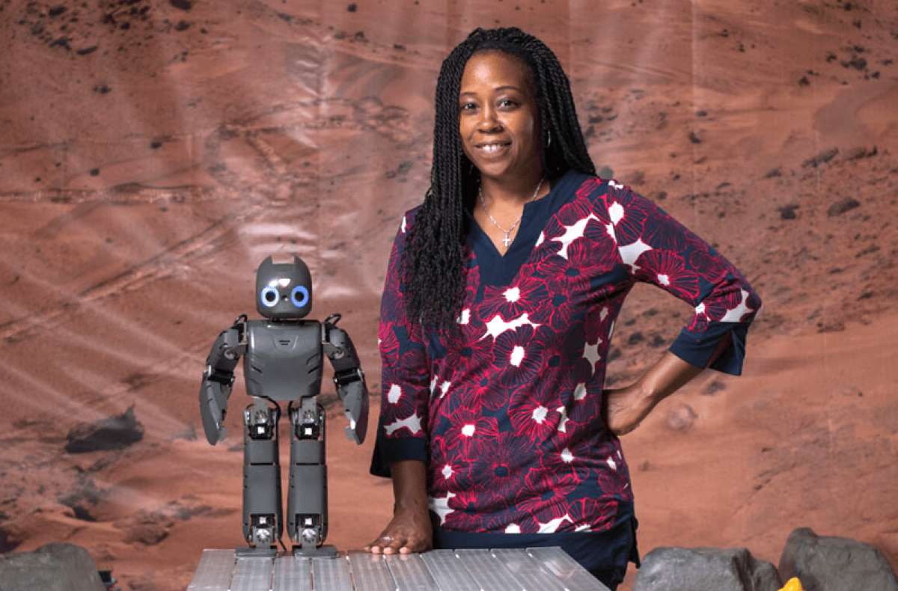

Launch Your Future as a Robotics Engineer
Design futuristic robots that explore, build, and help humans!
Pathway Snapshot
High School Courses | College Majors | Career Roles |
Algebra & Geometry | Robotics Engineering | Robotics Engineer |
Pre-Calculus & Calculus | Mechanical Engineering | Automation Engineer |
Physics | Electrical Engineering | Mechatronics Engineer |
Computer Science | Computer Science | AI Robotics Engineer |
Engineering / Robotics Club | Mechatronics | Robotics Software Engineer |
AP STEM Courses | Artificial Intelligence | R&D Engineer |
Women Who Lead the Way
Daniela Rus
Director, Computer Science & Artificial Intelligence Laboratory (CSAIL), Deputy Dean of Research, MIT Schwarzman College of Computing
Photo Credit: MIT CSAIL
“Robotics is about empowering people and amplifying human potential.”
Dr. Rus is a global leader in robotics and artificial intelligence, known for groundbreaking work in autonomous robots, soft robotics, and self-driving systems. Her research shapes how robots safely interact with people in the real world.
Day in the Life
What You Do Daily | Tools & Technologies You Use |
Design robot parts and systems | CAD software (SolidWorks, Fusion 360) |
Write and test robot code | Python, C++, ROS |
Build and assemble prototypes | Sensors, motors, microcontrollers |
Test robots and debug issues | Simulation tools (Gazebo, MATLAB) |
Collaborate with engineers & designers | Git, project management tools |
Improve performance using data | AI & machine learning tools |
Mini-Activity: Try This!
Build & Code a Mini Robot Challenge
- Use a robotics kit (LEGO SPIKE, VEX, or micro:bit + motors).
- Program your robot to follow a line or avoid obstacles.
- Bonus: Change the code to make it faster, smoother, or smarter.
This is exactly how real robotics engineers learn—by testing, tweaking, and improving!
Careers & Resources
Degree Program Finder:
Scholarships:
Summer Camps & Bootcamps:
- MIT Women’s Technology Program
- Girls Who Code
- FIRST Robotics
Explore the Career:
- O*NET Robotics Engineers – https://www.onetonline.org
- Roadtrip Nation – https://roadtripnation.com
You Belong Here
If you love building things, coding, solving puzzles, or imagining futuristic technology, robotics engineering could be your path. You don’t have to choose between creativity and technology—you can design, invent, and lead while changing how the world works.
Your path. Your future. And robotics needs you.
